ECG Blog #90 (Basic Concepts-3) – TRỤC

--------------------------------
Đây là phần thứ 3 trong loạt bài Khái niệm Cơ bản về Điện tâm đồ. Thay vì các ca bệnh cụ thể — mục tiêu của loạt Khái niệm Cơ bản về điện tâm đồ này là ôn tập ngắn gọn một số chủ đề ít chuyên sâu hơn, vốn tạo nên nền tảng của việc đọc điện tâm đồ. Tư liệu này được trích (có chỉnh sửa) từ cuốn sách nhập môn mới của tôi về đọc điện tâm đồ = “A 1st Book on ECGs-2014” và/hoặc phiên bản 1st-ECG-Book-ePub mở rộng (đã phát hành trên kindle-nook-kobo-ibooks). Rất MONG nhận được góp ý của các bạn về loạt bài này!
--------------------------------
- LƯU Ý: Để tăng tính thực tiễn — Chúng tôi bổ sung thêm một số khái niệm nâng cao hơn minh họa Ứng dụng lâm sàng của Trục ở gần cuối bài này (phần nội dung nâng cao hơn này được trích từ ECG-2014-ePub).
--------------------------------
LIÊN KẾT tới các Khái niệm Cơ bản về Điện tâm đồ Trước đây:
- Basic Concepts #1 — Thuật ngữ QRS
- Basic Concepts #2 — Các khoảng (PR/QRS/QT )
- Basic Concepts #3 (bài này! ) — Trục
- Basic Concepts #4 — Các nhóm chuyển đạo
- Basic Concepts #5 — LVH
- Basic Concepts #6 — Cách tiếp cận hệ thống
- Basic Concepts #7 — Thay đổi Q-R-S-T
--------------------------------

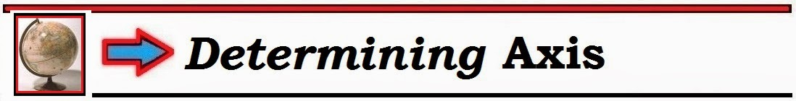
--------------------------------
Thông số thứ 4 trong Cách tiếp cận Hệ thống khi đọc điện tâm đồ (sau khi đánh giá Tần số – Nhịp – Các khoảng) — là xác định TRỤC. “Tin vui” — là việc ước lượng chính xác Trục trên mặt phẳng trán rất dễ thực hiện và có thể làm trong không quá vài giây.
- Điểm MẤU CHỐT: Để có cái nhìn đúng mức — tốt nhất là không nên quá bận tâm về Trục. Thông tin lâm sàng mà Trục cung cấp có giới hạn — và thường chỉ cần ước lượng trục là đủ. Hiếm khi cần chính xác hơn mức sai lệch khoảng 30 độ so với Trục thực.
--------------------------------
ĐỊNH NGHĨA: Trục “điện” là gì?
Vậy thuật ngữ “Trục” trong đọc điện tâm đồ có nghĩa là gì?
- Trục QRS trung bình — có thể được định nghĩa là hướng trung bình của hoạt động điện của tim trên mặt phẳng trán. Sự lan truyền hoạt động điện của tim thực ra diễn ra trong 3 chiều — bao gồm các mặt phẳng nằm ngang — thẳng đứng — và ngang (transverse) (Hình 1). “Trục” mà chúng ta quan tâm khi đánh giá thông số thứ 4 này trong Cách tiếp cận hệ thống là Trục mặt phẳng trán.
- Hoạt động điện trên mặt phẳng ngang — được đánh giá bằng 6 chuyển đạo ngực (hay chuyển đạo trước tim) (Hình 1). Dù các dấu hiệu như tăng tiến sóng R có phù hợp hay không là những thành phần quan trọng của việc đọc điện tâm đồ — các đặc điểm này không tham gia vào việc đánh giá “Trục”.
- Thay vào đó — chính 3 chuyển đạo chi chuẩn và 3 chuyển đạo tăng thế, tạo nên Hệ thống chuyển đạo sáu trục (Hexaxial) — mới là các chuyển đạo nhìn hoạt động điện của tim trên mặt phẳng trán. Như chúng ta sẽ thấy trong phần này — thường chỉ cần chú ý tới 3 trong 6 chuyển đạo của hệ sáu trục (chuyển đạo I,II,aVF) là đủ để biết những gì cần biết về Trục.

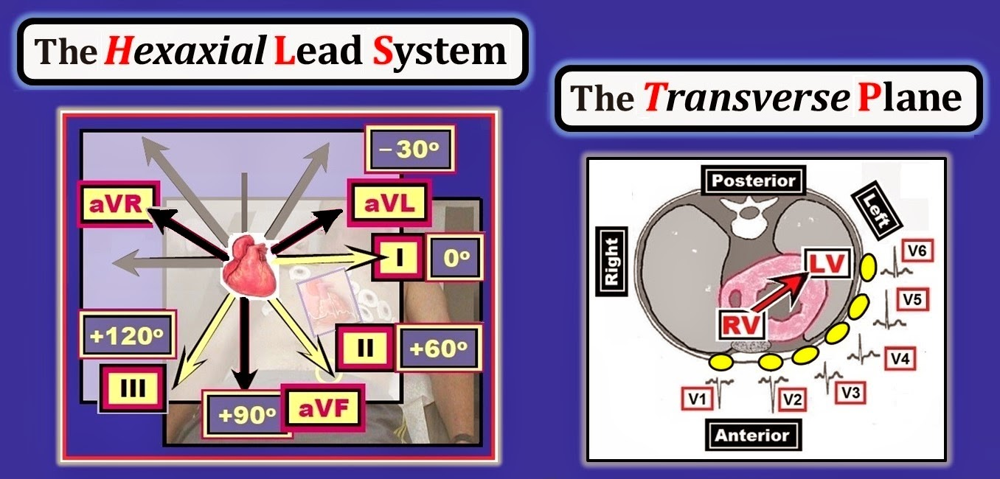
--------------------------------
Nguyên lý Nền tảng: 3 Định luật của Điện tâm đồ học
Nguyên lý xác định Trục mặt phẳng trán dựa trên 3 Định luật của Điện tâm đồ học (trình bày trong Hình 2).

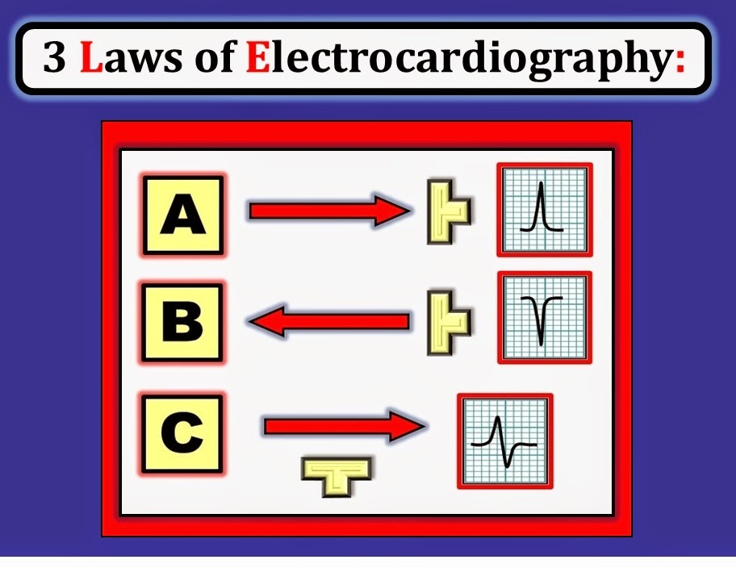
--------------------------------
3 Định luật của Điện tâm đồ học được trình bày dạng sơ đồ ở Hình 2 minh họa những điều sau:
- Định luật số 1: — một sóng hoạt động điện di chuyển về phía điện cực ghi sẽ tạo ra một sóng dương trên điện tâm đồ (Ô A).
- Định luật số 2: — một sóng hoạt động điện di chuyển ra xa khỏi điện cực ghi sẽ tạo ra một sóng âm trên điện tâm đồ (Ô B).
- Định luật số 3: — NẾU điện cực ghi được đặt vuông góc với (tức là, lệch 90 độ so với) hướng của sóng khử cực — thì một phức bộ đẳng điện hay “đẳng pha” (tức là, phức bộ QRS có phần lên và phần xuống bằng nhau) — sẽ được ghi trên điện tâm đồ (Ô C).
LƯU Ý lâm sàng: Sở dĩ ước lượng Trục dễ dàng — là nhờ 2 tiền đề sau đây, được rút ra từ 3 Định luật của Điện tâm đồ học:
- Tiền đề số 1: Trục sẽ gần nhất với chuyển đạo mặt phẳng trán nào có độ lệch QRS “thực” dương nhất.
- Tiền đề số 2: Trục sẽ vuông góc với (tức là — lệch khoảng 90 độ so với) bất kỳ chuyển đạo chi nào có phức bộ QRS đẳng điện (tương ứng với Ô C trong Hình 2).
--------------------------------
ĐỊNH NGHĨA: Độ lệch QRS “Thực” là gì?
Như đã nhấn mạnh trong Basic ECG Concepts #1 — phức bộ QRS thường không hoàn toàn dương hay hoàn toàn âm. Thay vào đó — phức bộ “QRS” thường là tổ hợp của các sóng dương (sóng R và R’) và các sóng âm (sóng Q và S).
- Để ước lượng Trục — Chúng ta cần thành thạo việc xác định độ lệch QRS “thực” (net QRS deflection). Đây đơn giản là lượng tương đối của phần dương so với phần âm trong độ lệch QRS. Một hình minh họa sẽ làm rõ khái niệm này (Hình 3).

--------------------------------
LƯU Ý lâm sàng: Không cần đếm số ô nhỏ trong từng sóng của mỗi phức bộ để xác định độ lệch “thực” tương đối. Đó là lý do chúng tôi cố ý bỏ lưới điện tâm đồ trong Hình 3.
- Như chúng ta sẽ thấy ngay sau đây — Xác định Trục nên là một phép tính nhanh, dễ thực hiện. Không nên mất quá 1 giây liếc nhìn Ô B ở Hình 3 để nhận ra độ lệch “thực” là âm — hoặc độ lệch “thực” ở Ô C là dương.
- Điểm nâng cao: Về mặt kỹ thuật — chính “diện tích dưới đường cong” mới là thứ được dùng để xác định độ lệch QRS “thực”. Ví dụ — sóng s ở Ô C của Hình 3 rất hẹp — nên diện tích bên trong sóng âm này rất nhỏ. Dù vậy — Bạn không cần bận tâm về diện tích! Xác định trục nên là một ước lượng nhanh mà bạn làm ngay khi nhìn mà không phải đo độ rộng hay chiều cao của các sóng.
--------------------------------
Xác định TRỤC: Cách tiếp cận theo Góc phần tư
Với các nguyên lý trên trong đầu — Chúng ta đã sẵn sàng bắt đầu xác định Trục. Ước lượng nhanh Trục dễ nhất là bằng Cách tiếp cận theo Góc phần tư (Quadrant Approach), giúp khu trú Trục vào một trong bốn phân đoạn 90 độ. Như trình bày ở Hình 4 — Chỉ cần 2 chuyển đạo để xác định Góc phần tư chứa Trục. 2 chuyển đạo này là chuyển đạo I (ở 0 độ) — và chuyển đạo aVF (ở +90 độ):
- Trục Bình thường — được định nghĩa là nằm trong khoảng 0 đến +90 độ.
- LAD (Left Axis Deviation — trục lệch trái) — nằm trong khoảng -1 đến -90 độ.
- RAD (Right Axis Deviation — trục lệch phải) — nằm trong khoảng +91 đến +180 độ.
- Trục Không xác định – nằm trong khoảng +180 đến +270 độ.
LƯU Ý lâm sàng: Mặc dù theo Cách tiếp cận theo Góc phần tư, chúng ta mô tả Trục +95 độ là “RAD” và Trục -10 độ là “LAD” — cần nhấn mạnh rằng những mức “lệch trục” tối thiểu này không có ý nghĩa lâm sàng.
- Tất cả những gì chúng ta làm chỉ là ước lượng gần đúng.
- Về lâm sàng — Hiếm khi cần tính Trục chính xác. Thường chỉ cần xác định Góc phần tư chứa Trục là đủ (Hình 4).

--------------------------------
Áp dụng Cách tiếp cận theo Góc phần tư (Ví dụ A)
Xác định Góc phần tư chứa Trục rất dễ — và chỉ mất chưa đến 5 giây. Chỉ cần dùng Bảng trong Hình 4. Chỉ cần luyện tập một chút — bạn sẽ thấy mình không cần tra Bảng này nữa.
- LƯU Ý: Theo định nghĩa, Trục sẽ “bình thường” (tức là, trong khoảng 0 đến +90 độ) — NẾU độ lệch QRS “thực” dương ở cả chuyển đạo I và chuyển đạo aVF.
- Nhưng, NẾU hoặc chuyển đạo I hoặc chuyển đạo aVF không có độ lệch “thực” dương — thì sẽ có “lệch” Trục sang một trong 3 Góc phần tư còn lại (hoặc RAD, LAD hoặc trục không xác định).
--------------------------------
Ví dụ A: Hãy xem ví dụ lâm sàng ở Hình 5. Xác định Góc phần tư chứa Trục. Thử xem bạn có ước lượng được số độ gần đúng của Trục không.
- LƯU Ý: Vì chỉ cần 2 chuyển đạo để xác định Góc phần tư của Trục — nên chúng tôi chỉ đưa 2 chuyển đạo này trong ví dụ này và trong các ví dụ sơ đồ tiếp theo.

--------------------------------
TRẢ LỜI cho Ví dụ A: Trục bình thường (tức là, trong khoảng 0 đến +90 độ). Chúng ta biết điều này ngay lập tức — vì độ lệch QRS “thực” ở cả chuyển đạo I và chuyển đạo aVF trong Hình 5 đều hiển nhiên dương (Xem Bảng trong Hình 4).
- Để dễ hình dung vị trí của Trục — Chúng tôi vẽ dạng sơ đồ các mũi tên màu trên Sơ đồ Góc phần tư Trục ở Hình 5, biểu thị chuyển đạo I (ở 0 độ) và chuyển đạo aVF (ở +90 độ). Mũi tên đen biểu thị ước lượng của chúng tôi cho Trục tổng thể.
- Lưu ý rằng phức bộ QRS ở Hình 5 — hoàn toàn dương ở cả chuyển đạo I và chuyển đạo aVF. NẾU sóng R cao bằng nhau ở 2 chuyển đạo này — thì Trục sẽ nằm chính giữa chúng (tức khoảng +45 độ).
- Vì sóng R ở chuyển đạo I của Hình 5 trông hơi cao hơn sóng R ở chuyển đạo aVF (mũi tên đỏ so với mũi tên xanh lá) — Chúng tôi ước lượng trục trong khoảng +30 đến 40 độ (mũi tên đen trong Hình). Về lâm sàng — Có lẽ chỉ cần nói Trục ở Hình 5 là “bình thường” là đủ.
--------------------------------
TỰ KIỂM TRA (Ví dụ B): Trục là bao nhiêu?
Xác định Góc phần tư chứa Trục ở Ví dụ B (trong Hình 6).
- Ước lượng số độ của Trục. Trục có bình thường không?

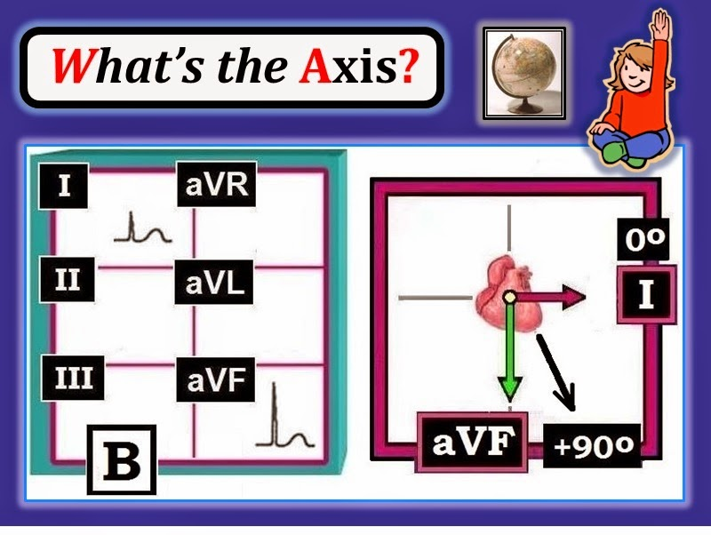
--------------------------------
TRẢ LỜI cho Ví dụ B: Trục ở Hình 6 một lần nữa bình thường (tức là, trong khoảng 0 đến +90 độ) — vì QRS hoàn toàn dương ở cả chuyển đạo I và chuyển đạo aVF.
- Vì độ lệch QRS ở chuyển đạo aVF rõ ràng dương hơn — trục nằm gần aVF hơn (khoảng +60-75 độ). Về lâm sàng — chỉ cần nói Trục “bình thường” là đủ.
- Hãy nhớ — Tất cả những gì bạn làm chỉ là ước lượng gần đúng! Việc tính trục không cần chính xác — miễn là ước lượng của bạn nằm trong phạm vi 20 đến 30 độ so với trục thực. Với mục đích của cuốn 1st Book on ECGs này — Chúng tôi hài lòng nếu bạn làm được không gì hơn ngoài việc xác định đúng Góc phần tư của Trục.
--------------------------------
TỰ KIỂM TRA (Ví dụ C): Trục là bao nhiêu?
Xác định Góc phần tư chứa Trục ở Ví dụ C (trong Hình 7).
- Ước lượng số độ của Trục. Trục có bình thường không?

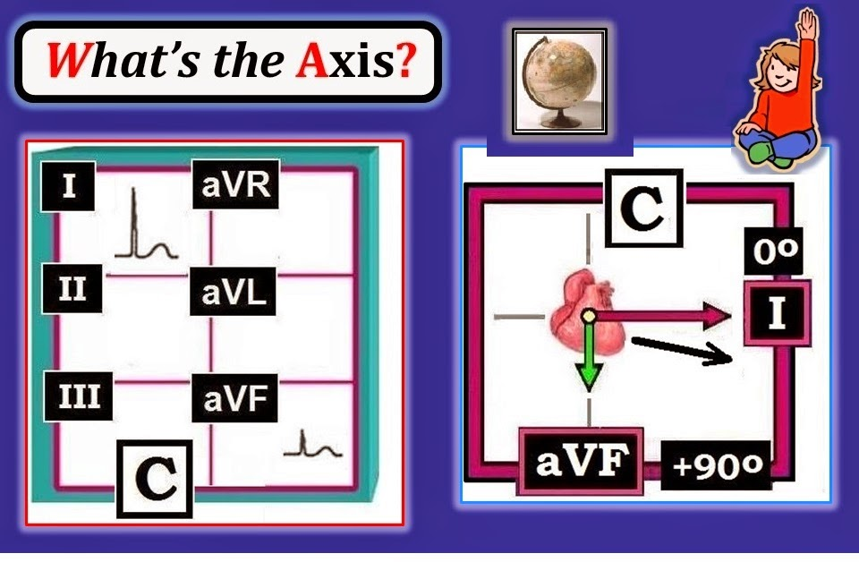
-------------------------------
TRẢ LỜI cho Ví dụ C: Trục ở Hình 7 cũng bình thường (tức là, trong khoảng 0 đến +90 độ). Chúng ta biết ngay điều này — vì phức bộ QRS hoàn toàn dương ở cả chuyển đạo I và chuyển đạo aVF.
- Vì sóng R ở chuyển đạo I dương hơn nhiều so với sóng R ở chuyển đạo aVF (mũi tên đỏ so với mũi tên xanh lá) — Chúng tôi ước lượng trục trong khoảng +10-30 độ.
--------------------------------
TỰ KIỂM TRA (Ví dụ D): Trục là bao nhiêu?
Xác định Góc phần tư chứa Trục ở Ví dụ D (trong Hình 8).
- Ước lượng số độ của Trục. Trục có bình thường không?

--------------------------------
TRẢ LỜI cho Ví dụ D: Trục ở Hình 8 không “bình thường”. Chúng tôi nói vậy — vì độ lệch QRS “thực” âm nhiều hơn dương ở một trong 2 chuyển đạo chính dùng để xác định trục.
- Cụ thể — phức bộ RS ở chuyển đạo aVF có sóng S âm sâu hơn so với chiều cao sóng R ở chuyển đạo này. Điều này đặt Trục vào bán cầu trên (mũi tên xanh lá trong Hình 8).
- Mặt khác — phức bộ QRS ở chuyển đạo I của Hình 8 hoàn toàn dương, với sóng R tương đối cao. Điều này đặt Trục vào bán cầu trái (mũi tên đỏ trong Hình 8).
- Sự hiện diện của độ lệch “thực” dương ở chuyển đạo I cùng với độ lệch “thực” âm ở chuyển đạo aVF — xác định Trục là LAD (Left Axis Deviation — trục lệch trái — như thấy rõ trong Bảng ở Hình 4). Dù vậy — sóng S ở chuyển đạo aVF không sâu hơn chiều cao sóng R là bao nhiêu. Vì vậy chúng tôi ước lượng LAD ở mức tương đối nhẹ (tức Trục trong khoảng -10 đến -20 độ).
- Về lâm sàng — Khi LAD nặng (tức là, âm rõ rệt hơn mức thấy ở Hình 8) — điều này có thể chỉ ra một rối loạn dẫn truyền gọi là LAHB (Left Anterior HemiBlock — blốc phân nhánh trái trước). Trước mắt — Chúng tôi hài lòng nếu bạn chỉ cần nhận ra có LAD. (Chúng tôi bàn về LAHB ở phần dưới, bắt đầu từ Hình 11).
LƯU Ý lâm sàng: “Cái hay” của Cách tiếp cận theo Góc phần tư (như trình bày ở Hình 4) — là bạn có thể biết trong vòng vài giây LIỆU trục có bình thường hay không.
- NẾU độ lệch QRS “thực” không dương ở cả chuyển đạo I và chuyển đạo aVF — thì Góc phần tư của Trục là không bình thường!
--------------------------------
TỰ KIỂM TRA (Ví dụ E): Trục là bao nhiêu?
Xác định Góc phần tư chứa Trục ở Ví dụ E (trong Hình 9).
- Ước lượng số độ của Trục. Trục có bình thường không?

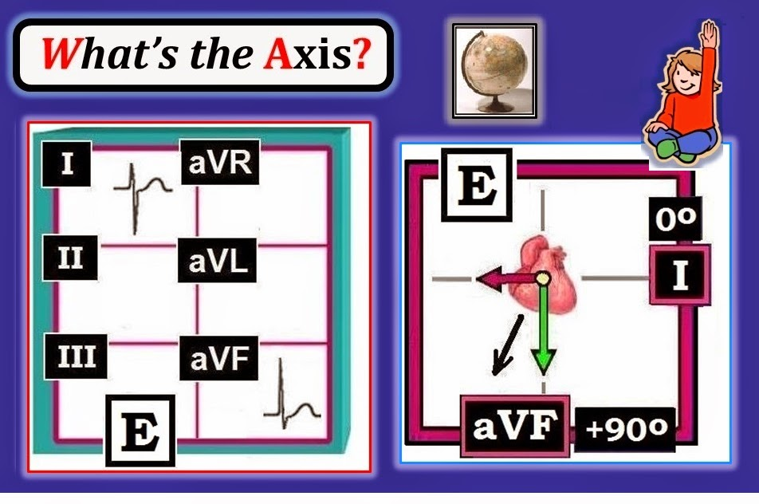
--------------------------------
TRẢ LỜI cho Ví dụ E: Trục ở Hình 8 không “bình thường” — vì độ lệch QRS “thực” âm nhiều hơn dương ở một trong 2 chuyển đạo chính.
- Cụ thể — phức bộ RS ở chuyển đạo I có sóng S âm sâu hơn so với chiều cao sóng R ở chuyển đạo này. Điều này đặt Trục vào bán cầu phải (mũi tên đỏ trong Hình 9).
- Mặt khác — phức bộ QRS ở chuyển đạo aVF của Hình 9 có độ lệch “thực” dương, với sóng R rõ ràng cao hơn độ sâu của sóng s ở chuyển đạo này. Điều này đặt Trục vào bán cầu dưới (mũi tên xanh lá trong Hình 9).
- Sự hiện diện của độ lệch “thực” âm ở chuyển đạo I cùng với độ lệch “thực” dương ở chuyển đạo aVF — xác định Trục là RAD (Right Axis Deviation — trục lệch phải — như minh họa ở Hình 4). Chúng tôi ước lượng Trục trong khoảng +100 đến +120 độ).
- Về lâm sàng — RAD ở mức này thường gặp nhất trong bệnh phổi và/hoặc khi thất phải lớn (Để biết thêm về RVH — Xem Hình 15).
--------------------------------
TỰ KIỂM TRA (Ví dụ F): Trục là bao nhiêu?
Xác định Góc phần tư chứa Trục ở Ví dụ F (trong Hình 10).
- Ước lượng số độ của Trục. Trục có bình thường không?

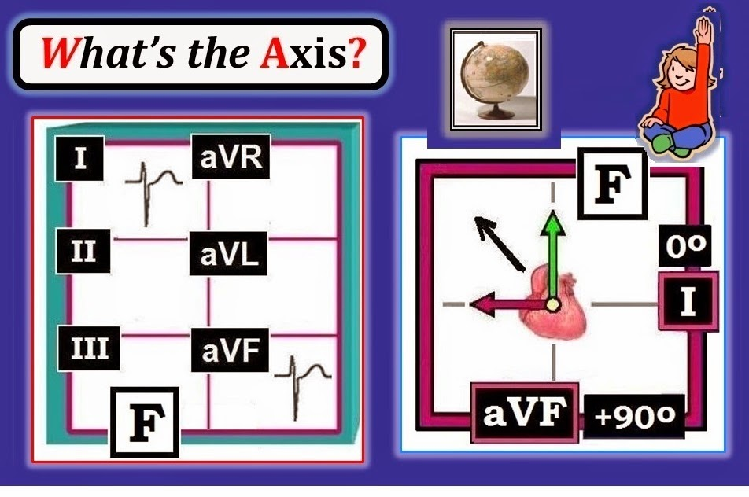
--------------------------------
TRẢ LỜI cho Ví dụ F: Trục ở Hình 10 không “bình thường”. Chúng ta biết điều này — vì độ lệch QRS “thực” âm ở ít nhất một trong 2 chuyển đạo chính dùng để xác định trục.
- Thực tế — độ lệch QRS “thực” là âm ở cả hai chuyển đạo I và chuyển đạo aVF. Điều này đặt Trục vào bán cầu phải và trên (mũi tên đỏ và xanh lá, tương ứng, trong Hình 10).
- Theo Hình 4 — sự hiện diện của độ lệch “thực” âm ở cả chuyển đạo I và chuyển đạo aVF xác định Trục là “không xác định” (tức là nằm ở Góc phần tư trên phải). LƯU Ý: Không cần cố ước lượng số độ khi Trục là “không xác định”. Như chính tên gọi đã ngụ ý — hầu như không thể “xác định” số độ cụ thể của một Trục “không xác định”.
- Về lâm sàng — Bệnh nhân COPD (bệnh phổi tắc nghẽn mạn tính – Chronic Obstructive Pulmonary Disease) dễ có trục không xác định (do khoang lồng ngực giãn rộng vì khí phế thũng của bệnh nhân COPD).
--------------------------------
ỨNG DỤNG LÂM SÀNG của việc XÁC ĐỊNH TRỤC
Hãy áp dụng những gì đã học để xác định Trục cho điện tâm đồ 12 chuyển đạo trong Hình 11.
- Trục có bình thường không?

--------------------------------
TRẢ LỜI cho Hình 11: Dù Hình 11 có 12 chuyển đạo — chỉ cần 2 trong số đó (I,aVF) để xác định Góc phần tư của Trục. Vì độ lệch QRS “thực” ở một trong 2 chuyển đạo này rõ ràng là âm (ở chuyển đạo aVF) — Chúng ta biết ngay khi nhìn qua rằng Trục không “bình thường”.
- Thực tế, độ lệch QRS ở chuyển đạo aVF gần như âm hoàn toàn. Điều này cho biết có LAD (trục lệch trái – Left Axis Deviation) rõ rệt trong ví dụ này — dẫn đến phần bàn luận về Blốc phân nhánh ...
--------------------------------
BLỐC PHÂN NHÁNH: Hệ thống Dẫn truyền Thất
Chúng tôi minh họa dạng sơ đồ hệ thống dẫn truyền thất trong Hình 12. Lưu ý rằng sau nút AV và bó His — hệ thống dẫn truyền thất chia thành 3 phân nhánh dẫn truyền chính. Đó là: i) nhánh phải mảnh; ii) phân nhánh trái trước tương đối mảnh, xuất phát từ đoạn nhánh trái chung ngắn; và iii) phân nhánh sau dày hơn và trải rộng hơn nhiều, là nhánh còn lại xuất phát từ đoạn nhánh trái chung ngắn.
- Dẫn truyền thất bại ở nhánh phải gây ra RBBB (blốc nhánh phải – Right Bundle Branch Block).
- Dẫn truyền thất bại ở nhánh trái chung gây ra LBBB (blốc nhánh trái – Left Bundle Branch Block).
- Dẫn truyền thất bại ở một trong các phân nhánh — gây ra Blốc phân nhánh (trước hoặc sau, tùy phân nhánh nào bị hỏng).

--------------------------------
Chẩn đoán Nhanh các BLỐC PHÂN NHÁNH (LAHB & LPHB)
Cần hiểu rằng hình minh họa hệ thống dẫn truyền trong Hình 12 chỉ là sơ đồ. Trên thực tế — có hàng triệu sợi trong hệ thống dẫn truyền với nhiều biến thể giải phẫu có thể có so với cách sắp xếp được vẽ. Tuy vậy — cách sắp xếp đơn giản hóa này giúp việc bàn luận dễ dàng hơn.
- Như đã nói — có 2 phân nhánh chính. Dẫn truyền thất bại ở phân nhánh này hay phân nhánh kia tạo ra một trong 2 loại Blốc phân nhánh = i) LAHB (blốc phân nhánh trái trước – Left Anterior HemiBlock) — hoặc ii) LPHB (blốc phân nhánh trái sau – Left Posterior HemiBlock).
- LPHB rất hiếm. Theo kinh nghiệm của chúng tôi — 98-99% blốc phân nhánh là LAHB. Lý do LPHB hiếm là: i) phân nhánh sau về giải phẫu dày hơn nhiều (Hình 12) — do đó khó bị tổn thương hơn; và ii) khác với phân nhánh trước, phân nhánh sau được cấp máu kép từ động mạch vành phải và trái. Khi LPHB có xảy ra — nó thường đi kèm RBBB, và cho thấy tổn thương lan rộng (Xem ECG Blog #30 — để xem một ví dụ LPHB/RBBB kèm bàn luận thêm).
- Vì vậy (do ~98-99% blốc phân nhánh là phân nhánh trước) — NẾU có blốc phân nhánh, thì hầu như luôn luôn đó là LAHB!
LƯU Ý: Ngay cả các chuyên gia điện tâm đồ cũng không thống nhất cách định nghĩa LAHB. Do thiếu đồng thuận như vậy — mọi việc sẽ đơn giản hơn (mà chính xác không kém) — NẾU bạn coi LAD (trục lệch trái – Left Axis Deviation) bệnh lý = LAHB. Hãy xem xét những điều sau:
- LAD nhẹ (tức là -10 đến -20 độ) — thường gặp và không nhất thiết bất thường.
- Chúng tôi định nghĩa LAD bệnh lý — là trục trái âm hơn -30 độ. Trong Hình 13 — chúng tôi minh họa việc nhận biết CÓ LAD bệnh lý hay không dễ như thế nào. Việc này chỉ mất vài giây — Bạn chỉ cần nhìn chuyển đạo II.

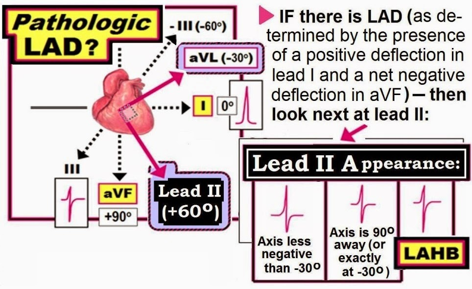
--------------------------------
Tóm tắt Khái niệm: Chẩn đoán nhanh LAHB
Chúng tôi đã nhấn mạnh rằng Góc phần tư của Trục có thể được xác định trong vài giây bằng cách nhìn độ lệch QRS thực ở 2 chuyển đạo (chuyển đạo I và aVF).
- Dùng thêm chuyển đạo thứ 3 = chuyển đạo II — cho phép xác định tiếp NẾU bệnh nhân có LAD có trục lệch trái đủ mức để được xếp là LAHB.
- Trên thực hành — Cần không quá 3 chuyển đạo này khi đánh giá Trục theo Cách tiếp cận hệ thống của chúng tôi (Hình 14).

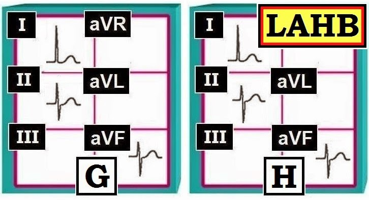
--------------------------------
TỰ KIỂM TRA: Có LAD không? Nếu có — Có LAHB không?
Hãy kết hợp các khái niệm này khi đánh giá Trục của 6 chuyển đạo trong Hình 15. Chúng ta đã gặp bản ghi này (ở Hình 11) — và đã xác định rằng có LAD (độ lệch QRS thực dương ở chuyển đạo I nhưng rất âm ở chuyển đạo aVF) rõ rệt.
- Làm sao nhận biết chỉ bằng một cái nhìn LIỆU mức độ LAD trong Hình 11 có đủ để xếp là LAHB?
- GỢI Ý: Nên nhìn chuyển đạo nào để trả lời câu hỏi này?

--------------------------------
TRẢ LỜI cho Hình 15: Như đã nhấn mạnh trong Hình 13 và Hình 14 — chỉ cần liếc chuyển đạo II là đủ để khẳng định có LAHB trong Hình 15:
- Chuyển đạo II — chủ yếu âm trong Hình 15. Do đó — Trục nằm cách chuyển đạo II hơn 90 độ (tức là âm hơn -30 độ) — vì vậy là LAHB.
--------------------------------
Ứng dụng Lâm sàng của TRỤC: Có RVH không?
Chúng tôi khép lại phần 3 này của loạt bài Khái niệm Cơ bản về điện tâm đồ — bằng việc minh họa thêm 2 cách xác định Trục được dùng trên lâm sàng. Trước hết hãy xem điện tâm đồ 12 chuyển đạo trong Hình 16 — ghi ở một người lớn tuổi bị suy tim. Có nhịp xoang. Các khoảng PR, QRS và QT đều bình thường.
- Trục có bình thường không? Nếu không — Tại sao?
- Về lâm sàng — Việc xác định Trục giúp gì cho việc diễn giải của chúng ta?

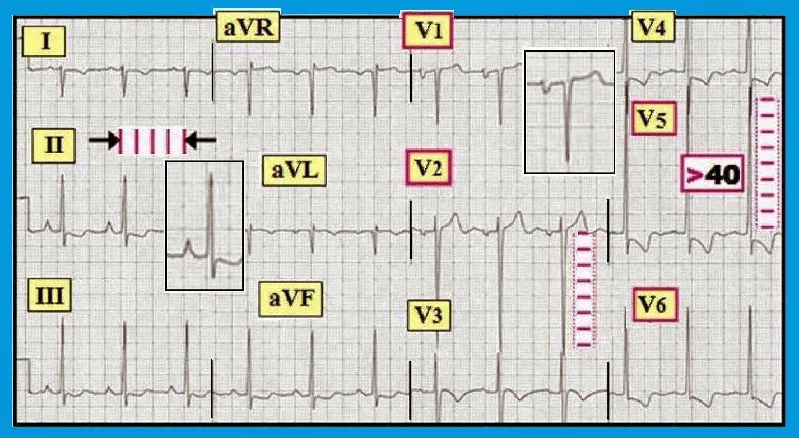
--------------------------------
TRẢ LỜI
cho Hình 16: Như
đã nói — nhịp là nhịp xoang và mọi khoảng đều bình thường. Ngoài ra —
có lớn ít nhất 3 buồng tim vì: i) Sóng P cao, nhọn và đỉnh nhọn
ở chuyển đạo II = RAA (bất thường nhĩ phải – Right Atrial Abnormality); ii)
Thành phần âm sâu của sóng P
ở chuyển đạo V1 = LAA (bất thường nhĩ trái – Left Atrial Abnormality); và iii) Tiêu chuẩn điện thế của LVH
dễ dàng được thỏa. Sóng ST-T phù hợp với thiếu máu cục bộ và/hoặc “tăng gánh” (Xem ECG Blog #73, Blog #75 và Blog #77 để
ôn lại tiêu chuẩn LVH; RAA/LAA; và RVH).
- Có RAD (trục lệch phải – Right Axis Deviation) rõ rệt — được xác định bởi phức bộ QRS dương ở chuyển đạo aVF đi kèm với QRS chủ yếu âm ở chuyển đạo I.
- Trong bối cảnh một người lớn tuổi bị suy tim và lớn ít nhất 3 buồng tim trên điện tâm đồ — dấu hiệu RAD rõ rệt + RAA gần như chắc chắn cho thấy còn có RVH (phì đại thất phải – Right Ventricular Hypertrophy). Thay đổi sóng ST-T ở các chuyển đạo thành dưới thực ra có thể phản ánh “tăng gánh” thất phải do RVH.
- Tiền sử suy tim kèm bằng chứng lớn nhiều buồng tim (trong ca này là cả 4 buồng tim) trên điện tâm đồ — hầu như chẩn đoán xác định bệnh cơ tim.
--------------------------------
Ứng dụng LÂM SÀNG của TRỤC: Có VT không?
Chúng tôi kết thúc bằng một ví dụ cho thấy việc xác định Trục có thể hỗ trợ chẩn đoán phân biệt một WCT (nhịp nhanh QRS rộng – Wide-Complex Tachycardia) đều mà không có hoạt động nhĩ bình thường. Chúng tôi bàn luận đầy đủ chủ đề phức tạp này ở nơi khác — Xem pdf Sections 08.0,09.0 (trích từ ACLS-2013-ePub của chúng tôi). Ở đây chúng tôi chỉ nêu “câu trả lời ngắn gọn” qua các điểm lâm sàng dưới đây:
- Luôn coi một nhịp WCT đều không có sóng P bình thường là VT cho đến khi chứng minh được điều ngược lại. Bạn sẽ đúng >80% trường hợp (>90% trường hợp nếu bệnh nhân trung niên hoặc lớn tuổi hơn và có bệnh tim nền).
- Điều trị bệnh nhân như thể nhịp là VT cho đến khi chứng minh được điều ngược lại.
- Bàn luận đầy đủ về các tiêu chuẩn chẩn đoán mà chúng tôi thấy hữu ích nhất để phân biệt SVT kèm hoặc blốc nhánh hoặc dẫn truyền lệch hướng với VT có trong pdf Sections 08.0,09.0 (trong ACLS-2013-ePub) của chúng tôi. Theo kinh nghiệm của chúng tôi — 3 Quy tắc Đơn giản giúp quá trình chẩn đoán dễ dàng hơn rất nhiều. Khả năng là VT vượt quá 90-95% — NẾU i) phức bộ QRS giãn rộng rõ rệt và không có hình dạng rõ ràng; và/hoặc ii) phức bộ QRS hoàn toàn âm (hoặc gần như hoàn toàn âm) ở chuyển đạo bên trái V6; và/hoặc iii) có trục lệch cực độ trên mặt phẳng trán (tức là nếu phức bộ QRS hoàn toàn âm ở chuyển đạo I hoặc chuyển đạo aVF).
CÂU HỎI: “Quy tắc Đơn giản” nào trong 3 quy tắc trên có mặt ở điện tâm đồ 12 chuyển đạo trong Hình 17? Giả sử bệnh nhân là người lớn tuổi có tiền sử bệnh tim — và bệnh nhân ổn định huyết động mặc dù đang có nhịp này.

--------------------------------
- TRẢ LỜI cho Hình 17: Hãy nhận ra rằng xác suất thống kê để WCT đều này là VT ở người lớn tuổi có bệnh tim này — đã vượt quá 90% ngay cả trước khi xem kỹ bản ghi! Dù vậy — chúng ta có thể nâng khả năng là VT lên gần 100% khi nhận thấy cả 3 Quy tắc Đơn giản trên đều có mặt!
- QRS giãn rộng (tới ít nhất 0.16 giây ở một số chuyển đạo) rõ rệt — và có hình dạng “xấu xí” (do đó ít có khả năng phản ánh blốc nhánh hay dẫn truyền lệch hướng hơn nhiều).
- Phức bộ QRS ở chuyển đạo V6 âm hoàn toàn — điều tự nó đã làm khả năng VT gần 100%!
- Có trục lệch (QRS hoàn toàn âm ở chuyển đạo I) cực độ — điều này cũng gần như tự nó đã làm khả năng VT gần 100%!
--------------------------------
—
Để biết thêm thông tin — TRUY CẬP —
============================================
- Để tìm hiểu thêm về Trục/ Blốc phân nhánh — Mời xem ECG Video #13 dài 42 phút của chúng tôi
============================================
- Tư liệu cho 10 Hình đầu tiên được trích từ ấn phẩm mới nhất của chúng tôi = “A 1st Book on ECGs-2014” và/hoặc từ phiên bản mở rộng 1st Book ePub (có trên kindle-kobo-nook-ibooks).

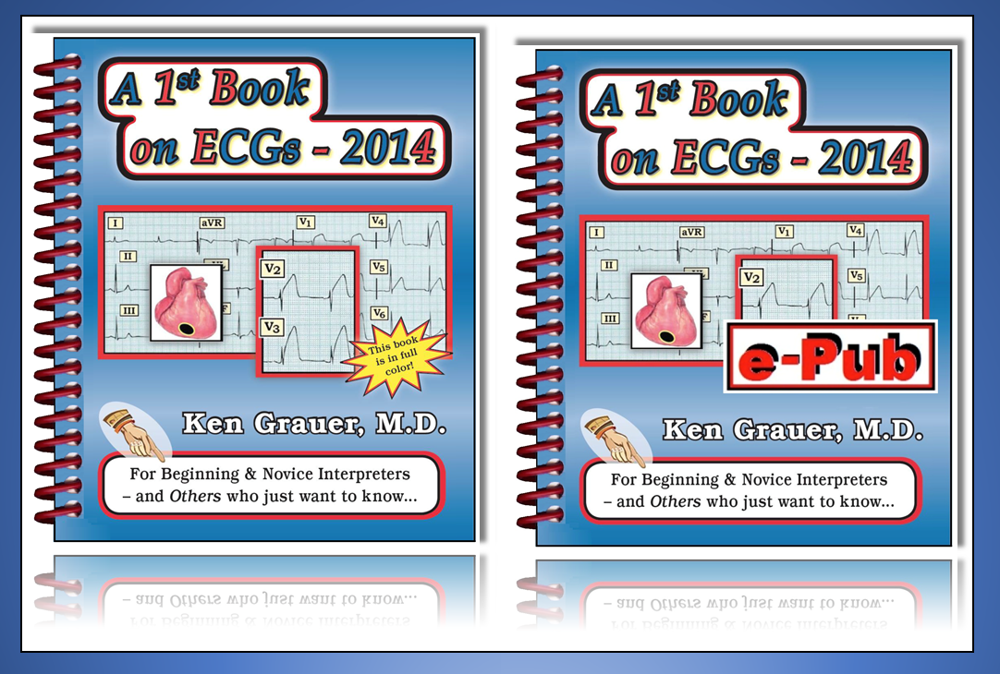
--
- Tư liệu nâng cao hơn cho 7 Hình cuối minh họa ứng dụng lâm sàng của Trục được trích từ ECG-2014-Pocket Brain và/hoặc từ phiên bản ECG-2014 ePub mở rộng (có trên kindle-kobo-nook-ibooks).

--
- Mời tải miễn phí GLOSSARY (bảng thuật ngữ) mở rộng của chúng tôi về các thuật ngữ liên quan đến điện tâm đồ -

- -
--------------------------------------------------------------